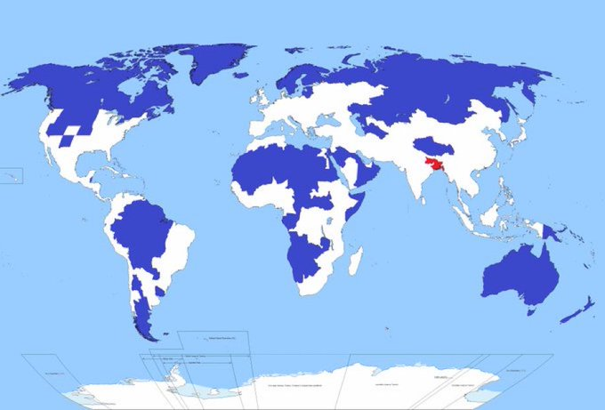
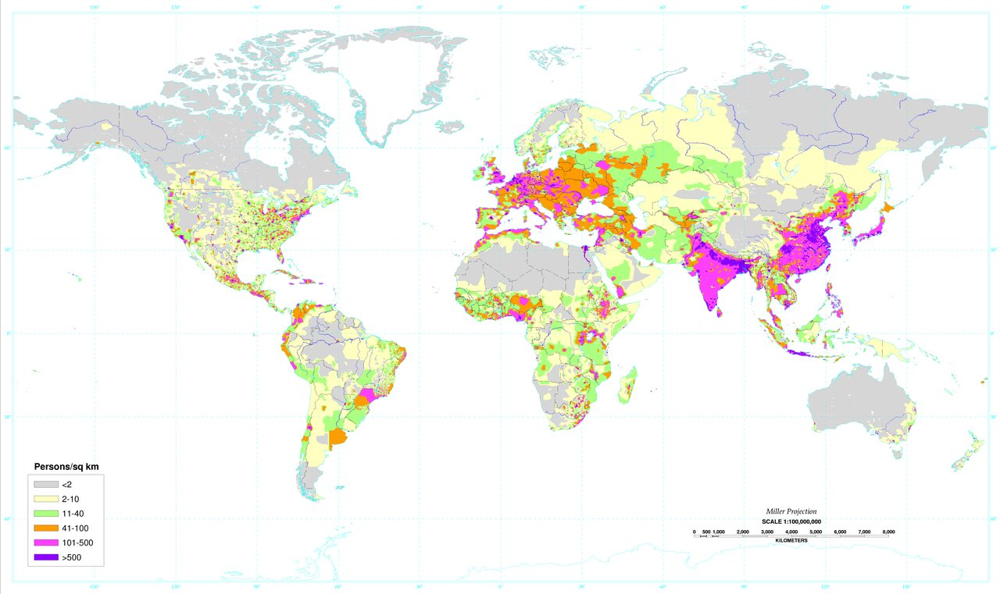

9 Human Settlements
9.1 Organization of Life
Life consists of units within units. In the biological world, we have genes, individuals, groups, species, and ecosystems – all nested within the biosphere. In the human world, we have genes, individuals, families, villages and cities, provinces, and nations – all nested within the global village. In both worlds, a problem lurks at every rung of the ladder: a potential conflict between the interests of the lower-level units and the welfare of the higher-level units. What’s good for me can be bad for my family. What’s good for my family can be bad for my village, and so on, all the way up to what’s good for my nation can be bad for the global village.
For most of human existence, until a scant 10 or 15 thousand years ago, the human ladder was truncated. All groups were small groups whose members knew each other as individuals. These groups were loosely organized into tribes of a few thousand people, but cities, provinces, and nations were unknown.
Today, over half the earth’s population resides in cities and the most populous nations teem with billions of people, but groups the size of villages still deserve a special status. They are the social units that we are genetically adapted to live within and they can provide a blueprint for larger social units, including the largest of them all – the global village of nations.
Every once in a great while, the good manage to decisively suppress selfishness within their ranks. Then something extraordinary happens. The group becomes a higher-level organism.
The idea that trust requires social control is paradoxical because social control is not trusting. Nevertheless, social control creates an environment in which trust can flourish. When we know that others cannot harm us, thanks to a strong system of social controls, then we can express our positive emotions and actions toward others to their full extent: helping because we want to, not because we are forced to. When we feel threatened by those around us, due to a lack of social control, we withhold our positive emotions and actions like a snail withdrawing into its shell.
There is evidence that village-like social controls are starting to form at larger scales without the help of governments. In the United States, a nonprofit organization called B-lab (B stands for benefit) provides a certification service for corporations. Those that apply for certification receive a score on the basis of a detailed examination. If the score exceeds a certain value, then the company is permitted to advertise itself as a B-Corporation.
9.2 Population Density
Population density unevenness.
5% ofhumans in the blue - 5%in the red - 90% in the white

